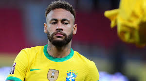

About Neymar Jr
Neymar Jr., the Brazilian football phenomenon, transcends the boundaries of mere athleticism, embodying the essence of flair, creativity, and unyielding determination on the pitch. Born Neymar da Silva Santos Júnior on February 5, 1992, in Mogi das Cruzes, São Paulo, he was destined for greatness from a young age. Bursting onto the football scene with the exuberance and skill reminiscent of Brazilian legends past, Neymar quickly captured the imagination of fans worldwide. His dazzling footwork, lightning-quick dribbling, and instinctive ability to find the back of the net make him a constant threat to any opposition. Neymar's journey to stardom took flight at Santos FC, where he honed his craft and earned a reputation as one of the most promising talents in South American football. In 2013, he made the bold move to Barcelona, joining forces with Lionel Messi and Luis Suárez to form one of the most lethal attacking trios in football history, famously known as "MSN." Together, they conquered domestic and European competitions, with Neymar playing a pivotal role in Barcelona's treble-winning campaign in the 2014-2015 season. However, his ambition and thirst for new challenges led him to Paris Saint-Germain in 2017, where he shattered transfer records with his monumental €222 million move, making him the most expensive player in football history. At PSG, Neymar continues to dazzle crowds with his mesmerizing skills, guiding the team to numerous domestic triumphs and spearheading their quest for European glory. Beyond the pitch, Neymar's charisma and magnetic personality have elevated him to the status of a global icon, with endorsements, sponsorships, and a massive social media following amplifying his influence far beyond football. Despite facing scrutiny and criticism at times, Neymar remains unfazed, his love for the game undiminished as he strives for greatness with every touch of the ball. In the pantheon of football legends, Neymar Jr. has etched his name in the annals of the sport, a testament to his unrivaled talent, passion, and indomitable spirit.
Journey to Stardom
Neymar Jr.'s journey to stardom is a captivating narrative of talent, perseverance, and relentless determination that began in the streets of São Paulo, Brazil. From a young age, Neymar showcased an innate flair for football, dazzling spectators with his extraordinary skills and infectious passion for the game. His journey took a significant leap forward when he joined the renowned Santos FC youth academy, where he honed his craft under the watchful eye of seasoned coaches. Neymar's rise through the ranks was meteoric, as he quickly established himself as the crown jewel of Brazilian football, earning comparisons to legends like Pelé and Ronaldinho. Bursting onto the professional scene with Santos FC, Neymar's electrifying performances captivated audiences both domestically and internationally, earning him a reputation as one of the most promising talents in world football. With each match, Neymar's star continued to ascend, drawing the attention of European giants hungry to secure his signature. In 2013, he made the high-profile move to FC Barcelona, where he formed a formidable attacking trio alongside Lionel Messi and Luis Suárez, achieving unprecedented success on both domestic and continental fronts. Despite facing immense pressure and scrutiny, Neymar thrived under the spotlight, showcasing his remarkable skill set and unyielding determination to overcome adversity. In 2017, Neymar embarked on a new chapter in his career with Paris Saint-Germain, breaking transfer records with his monumental move and shouldering the weight of lofty expectations. Despite encountering challenges and setbacks along the way, Neymar's unwavering resolve and unwavering belief in his abilities have propelled him to the summit of the footballing world. Today, Neymar stands as a global icon, revered for his unparalleled talent, charismatic personality, and enduring passion for the beautiful game. His journey from the streets of São Paulo to the grandest stages of football is a testament to the power of perseverance, talent, and relentless pursuit of excellence.
Club Career
Neymar Jr.'s club career is a tapestry woven with the threads of ambition, skill, and unparalleled success, spanning across some of the most illustrious clubs in football history. His professional journey began with Santos FC, where he rose through the ranks of the famed Brazilian club's youth system, dazzling fans with his electrifying performances and innate talent. With Santos, Neymar quickly established himself as one of the brightest young stars in the sport, leading the team to multiple domestic titles and capturing the hearts of football enthusiasts around the world with his mesmerizing skill set. However, it was his move to FC Barcelona in 2013 that catapulted Neymar into the global spotlight, as he joined forces with Lionel Messi and Luis Suárez to form the iconic attacking trio known as "MSN." Together, they orchestrated a footballing symphony that mesmerized audiences, securing numerous La Liga titles, Copa del Rey triumphs, and the prestigious UEFA Champions League trophy in 2015. Neymar's tenure at Barcelona was defined by his flair, creativity, and ability to perform under pressure, solidifying his status as one of the most formidable forwards in the world. In 2017, Neymar embarked on a new chapter in his career with Paris Saint-Germain, where he shattered transfer records with his monumental €222 million move, becoming the focal point of the ambitious French club's quest for European glory. With PSG, Neymar has continued to showcase his immense talent, guiding the team to multiple Ligue 1 titles and spearheading their charge in continental competitions. Despite facing challenges and criticism along the way, Neymar's club career remains a testament to his unwavering determination, relentless pursuit of excellence, and enduring impact on the global footballing landscape.
International Success
Neymar Jr.'s international success is a testament to his indomitable spirit, exceptional skill, and unwavering commitment to representing his country with pride and excellence on the global stage. From his early days donning the yellow and green of Brazil's youth teams to his ascent to the senior squad, Neymar has been a central figure in the Seleção's quest for glory. His breakthrough on the international scene came in 2011 when he played a crucial role in Brazil's triumph at the FIFA U-20 World Cup, earning the tournament's Golden Ball award for his outstanding performances. Neymar's flair and brilliance captured the imagination of fans worldwide, setting the stage for his meteoric rise to prominence. He seamlessly transitioned to the senior national team, where he became the face of Brazilian football, embodying the nation's rich tradition of attacking flair and creativity. Neymar's crowning achievement on the international stage came in 2013 when he inspired Brazil to victory in the FIFA Confederations Cup, delivering stellar performances throughout the tournament and cementing his status as one of the world's premier talents. Despite enduring setbacks and heartbreaks, including the disappointment of the 2014 FIFA World Cup on home soil, Neymar has remained steadfast in his commitment to leading Brazil to glory. He played a pivotal role in Brazil's redemption at the 2016 Olympic Games in Rio de Janeiro, guiding the team to its first-ever Olympic gold medal in men's football. Neymar's influence on the international stage extends beyond his performances on the pitch; he serves as a symbol of Brazilian footballing excellence and national pride, inspiring future generations with his passion, skill, and unwavering dedication to the green and gold jersey. As Neymar continues to etch his name in the annals of footballing history, his international success stands as a testament to his enduring legacy as one of the greatest players of his generation.
Achievements
Neymar Jr.'s illustrious career is adorned with a plethora of achievements that underscore his status as one of the most talented and accomplished footballers of his generation. From his early days at Santos FC to his storied stints at FC Barcelona and Paris Saint-Germain, Neymar has amassed a dazzling array of trophies and accolades. At Santos, he captured numerous Campeonato Paulista titles and the Copa Libertadores, etching his name in the club's rich history. His move to FC Barcelona saw him claim multiple La Liga titles, Copa del Rey triumphs, and the prestigious UEFA Champions League trophy in 2015, forming an iconic attacking trio alongside Lionel Messi and Luis Suárez. Individually, Neymar has been honored with numerous awards, including multiple South American Footballer of the Year titles and FIFA Puskás Awards for his breathtaking goals. He has also been a consistent presence in the UEFA Champions League and FIFA FIFPro World XI teams, further solidifying his reputation as one of the game's preeminent talents. On the international stage, Neymar guided Brazil to victory in the FIFA Confederations Cup in 2013 and secured Olympic gold at the 2016 Rio Games, fulfilling a dream cherished by generations of Brazilian footballers. Despite facing adversity and injury setbacks, Neymar's relentless pursuit of excellence has seen him conquer domestic and continental competitions with PSG, adding multiple Ligue 1 titles and domestic cup triumphs to his already illustrious resume. With each trophy lifted and record broken, Neymar's achievements serve as a testament to his extraordinary talent, unwavering determination, and enduring legacy in the annals of football history.
Off the Pitch
Off the pitch, Neymar Jr. is a multifaceted personality whose charisma, philanthropy, and global influence extend far beyond the confines of the football field. Renowned for his magnetic personality and infectious smile, Neymar's off-field endeavors encompass a wide spectrum of interests and activities. As a fashion icon, he has graced the covers of prestigious magazines, collaborated with renowned designers, and established his own line of apparel and footwear. Neymar's entrepreneurial spirit is further evidenced by his investments in various business ventures, ranging from startups to real estate projects, showcasing his acumen beyond the realm of sports. Moreover, Neymar is deeply committed to giving back to his community and making a positive impact on society. Through his Neymar Jr. Institute, he provides educational and social support to underprivileged children in Brazil, empowering them to pursue their dreams and break the cycle of poverty. Additionally, Neymar is actively involved in charitable initiatives and philanthropic causes worldwide, lending his voice and resources to campaigns aimed at promoting social justice, environmental sustainability, and humanitarian relief efforts. His philanthropy extends beyond borders, reflecting his genuine desire to use his platform for the betterment of others. Despite the spotlight and scrutiny that accompany his fame, Neymar remains grounded in his values, using his influence to inspire positive change and leave a lasting legacy that transcends the boundaries of sport. Whether dazzling on the pitch or making a difference off it, Neymar Jr. continues to captivate hearts and minds around the globe, embodying the true essence of a modern-day icon.
Join the Journey
Neymar Jr.'s journey from the streets of Mogi das Cruzes to the summits of European and international football is a testament to his unyielding determination, exceptional talent, and unwavering passion for the beautiful game. From a young age, Neymar exhibited a natural flair and innate ability with the ball at his feet, catching the attention of scouts and coaches alike. His rise through the ranks of Brazilian football was meteoric, as he honed his skills on the pitches of his hometown before catching the eye of Santos FC, one of the country's most storied clubs. It was at Santos where Neymar's prodigious talent truly began to blossom, as he dazzled fans with his electrifying dribbles, audacious tricks, and clinical finishing. Neymar quickly established himself as the crown jewel of Brazilian football, earning comparisons to past legends and igniting the hopes of a nation hungry for a new hero. His performances on the domestic stage were nothing short of sensational, as he led Santos to multiple titles and captured the imaginations of fans around the world with his breathtaking displays of skill and creativity. However, it was Neymar's move to FC Barcelona in 2013 that catapulted him to global superstardom, as he joined forces with Lionel Messi and Luis Suárez to form one of the most potent attacking trios in football history. Together, they achieved unparalleled success, winning multiple La Liga titles, Copa del Rey trophies, and the UEFA Champions League, with Neymar playing a pivotal role in each triumph. Despite the weight of expectations and the glare of the spotlight, Neymar thrived under the pressure, cementing his status as one of the sport's brightest talents and most marketable stars. His journey continued with a blockbuster transfer to Paris Saint-Germain in 2017, where he shattered transfer records and embarked on a new chapter in his career. At PSG, Neymar has continued to showcase his immense talent and insatiable hunger for success, leading the team to domestic glory and spearheading their quest for European supremacy. Alongside his club exploits, Neymar has also left an indelible mark on the international stage, representing Brazil with distinction and helping lead the Seleção to victory in prestigious tournaments such as the FIFA Confederations Cup and the Olympic Games. Through triumphs and tribulations, Neymar's journey serves as a testament to the power of passion, perseverance, and unwavering belief in oneself. As he continues to etch his name into the annals of footballing history, Neymar Jr. remains an inspiration to millions around the world, proving that with talent, determination, and a relentless work ethic, anything is possible.
Connect with Neymar Jr
Stay connected with Neymar Jr on social media: